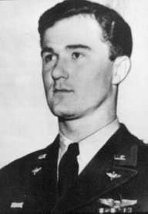

Thomas Mantell
Air National Guard pilot, 1922 to 1948

Died in January 1948 when his P-51 crashed while he was chasing an unidentified object over Kentucky. The Air Force later concluded he was most likely chasing a high-altitude Skyhook balloon. 1
Open in the interactive Watcher
Related
Sources
- Mantell UFO incident Wikipedia